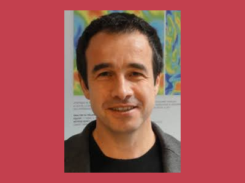

Qu'est ce que Compas?
Compas est la Conférence d’informatique en Parallélisme,
Architecture et Système. L'édition 2018
aura lieu du 03 au 06 juillet à l'INPT-ENSEEIHT à Toulouse.
Elle est organisée par par l'IRIT -
Institut de Recherche en Informatique de Toulouse (UMR 5505). L'édition 2017 a
eu lieu au campus SophiaTech de Sophia Antipolis et a accueilli
une centaine de chercheurs.
Depuis de nombreuses années,
les sessions de la conférence Compas conjuguent un programme riche
incluant des contributions scientifiques de qualité ainsi que des
moments privilégiés pour favoriser la rencontre de chercheurs
confirmés, de jeunes chercheurs et d'industriels autour des
thématiques du parallélisme, de l'architecture et des systèmes.
Compas permet de renforcer les liens entre équipes de recherche du
monde francophone et favorise l’émergence de nouveaux sujets de
recherche et collaborations.
Keynotes et Programme de ComPas'18
